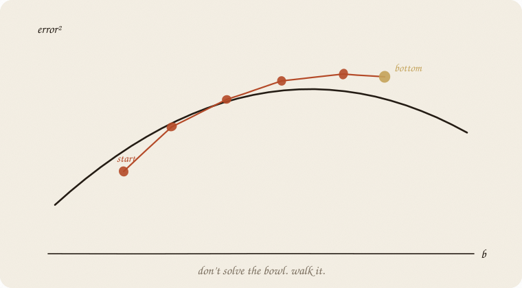
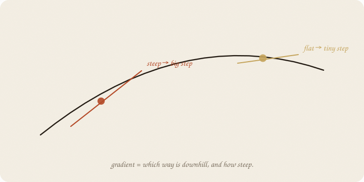
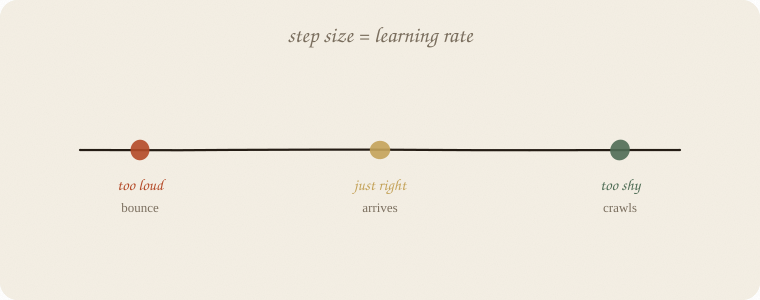
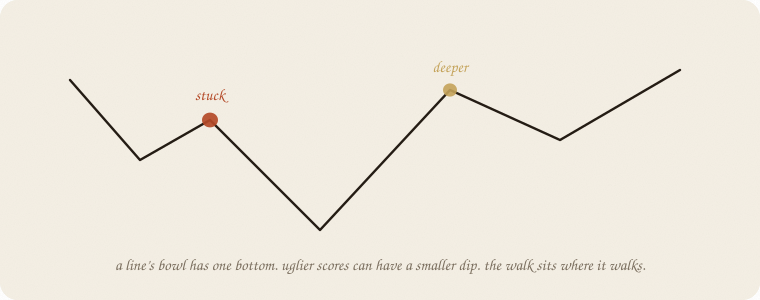

datazines · a sketchbook

Read 01 linear regression first, especially the bowl on page 14. Same eight people. Same line ŷ = a + b · hours. Different verb: walk to a and b instead of jumping to the bottom.
This is 01 of the optimization wing. Logistic, a tiny net, an LLM — they all walk. Boosting hunts leftover with a tree; this hunts leftover by moving knobs. Same verb.
Flip it like a notebook. One page = one idea. Done.
Error² as a function of a and b is a bowl. Least squares sits at the lowest point: a = 1.75, b = 1 for our eight grades.
For a straight line, you can land there in one shot. For a net, you cannot. Too many knobs, no tidy formula. So you walk:
The slope is the gradient. Descent = go against it (down).

On a 1-D hill: steep → big step. Flat (near the bottom) → tiny step. You do not jump to the answer. You slide.
With two knobs (a and b) the slope is a pair of numbers: “nudge a this way, b that way.” Same idea. The leftover y − ŷ tells you the direction — boosting hunted leftovers by planting a tree; here you hunt them by moving knobs.
You have met this knob in boosting. Here it is the step size.
new knob ≈ old knob − (learning rate) × slope

| too loud | just right | too shy |
|---|---|---|
| bounce, or explode | arrives | crawls forever |
On our eight people, rate 0.05: after 400 steps you are at a ≈ 1.71, b ≈ 1.01 — next to OLS.
Rate 0.2: after 30 steps a and b are in the billions. The bowl spat you out.
Same word as boosting. Different machine. Still: quiet steps, more of them.
A line’s bowl has one bottom. Uglier scores (a net) can have a smaller dip on the way. The walk sits where it walks — not always the deepest hole.

How you don’t sit there forever: start again from somewhere else, or take noisier steps (SGD, above). A later page. The eight-person line does not need this.
If you keep only one thing:
don’t solve the bowl. walk it. rate = how long each stride is.
Same table as linear regression. Start at a = 0, b = 0. Rate 0.05. No sklearn estimator — the walk is the lesson.
import numpy as np
from sklearn.linear_model import LinearRegression
hours = np.array([1, 2, 2, 3, 4, 5, 5, 6], float)
grade = np.array([3, 4, 3, 5, 6, 7, 6, 8], float)
ols = LinearRegression().fit(hours.reshape(-1, 1), grade)
print("OLS a, b, mse",
round(ols.intercept_, 3), round(ols.coef_[0], 3),
round(((ols.predict(hours.reshape(-1, 1)) - grade) ** 2).mean(), 4))
a, b, rate = 0.0, 0.0, 0.05
for step in range(1, 401):
resid = (a + b * hours) - grade
a -= rate * resid.mean()
b -= rate * (resid * hours).mean()
if step in (1, 10, 50, 100, 200, 400):
mse = ((a + b * hours - grade) ** 2).mean()
print(f"step {step:3d} a={a:.3f} b={b:.3f} mse={mse:.4f}")
OLS a, b, mse 1.75 1.0 0.1875
step 1 a=0.263 b=1.056 mse=1.8619
step 10 a=0.436 b=1.310 mse=0.5043
step 50 a=0.823 b=1.219 mse=0.3451
step 100 a=1.151 b=1.142 mse=0.2534
step 200 a=1.500 b=1.059 mse=0.1990
step 400 a=1.706 b=1.010 mse=0.1879
Walk, don’t jump: 400 quiet steps land next to 1.75 + 1·hours. MSE almost the OLS floor (0.1875). A loud rate (0.2) explodes — do not paste that into production.
SGD = one person per step, not all eight. Same downhill, noisier path. Nets need that. Same eight people, same rate, shuffle each pass (house seed 7):
rng = np.random.default_rng(7)
a, b, rate = 0.0, 0.0, 0.05
for epoch in range(50):
for i in rng.permutation(len(hours)):
resid = (a + b * hours[i]) - grade[i]
a -= rate * resid
b -= rate * resid * hours[i]
print(f"SGD 400 one-person steps a={a:.3f} b={b:.3f} mse={((a + b * hours - grade) ** 2).mean():.4f}")
SGD 400 one-person steps a=1.625 b=1.122 mse=0.3206
Nearby, not on the floor. The path wiggled. That is the point, not a bug. Quiet the rate or average a handful (a mini-batch) if the wiggle is too loud.
| word | meaning |
|---|---|
| bowl / loss | error as a function of knobs |
| gradient | slope: downhill + how steep |
| step | knobs ← knobs − rate × gradient |
| learning rate | stride length |
| OLS | the exact bottom, when it exists |
| SGD | walk on a sample, not the whole class |
Also called: bowl = loss surface · knobs = parameters · rate = learning rate · leftover = residual / error.
Reach for it when there is no closed-form bottom (nets, deep anything). When you want to see training as walking.
Skip it when one line and OLS already solved it; you only needed a and b once.
Pays you: the verb of modern ML. Logistic, nets, LLMs — they walk this. Same rate-knob as boosting.
Costs you: knobs to tune. Can bounce or crawl. A smaller dip can trap the walk (the line’s bowl does not). Not a new model — a way to fit one.
Walk wing, 01. Chance wing next door: 01 distributions. Softmax after that. The leftover walking backward: 01 neural net.
Flip it like a notebook. One page = one idea.